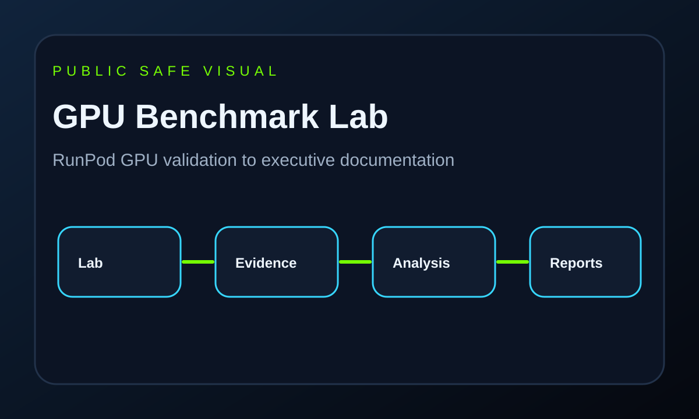
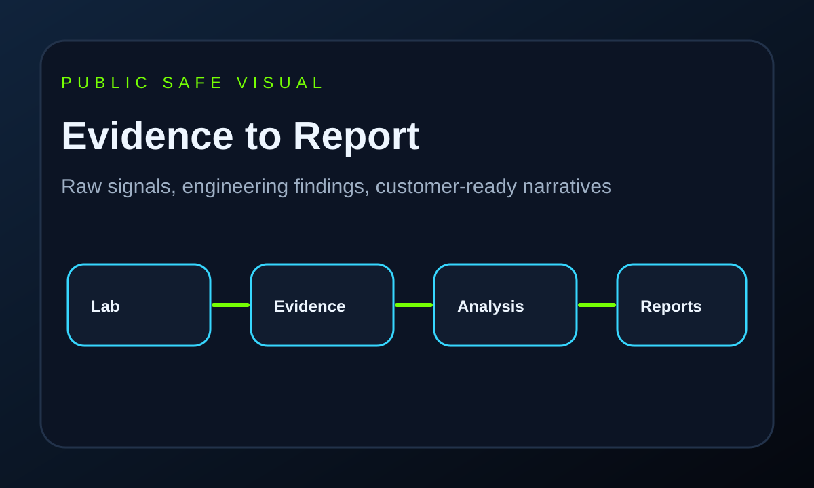
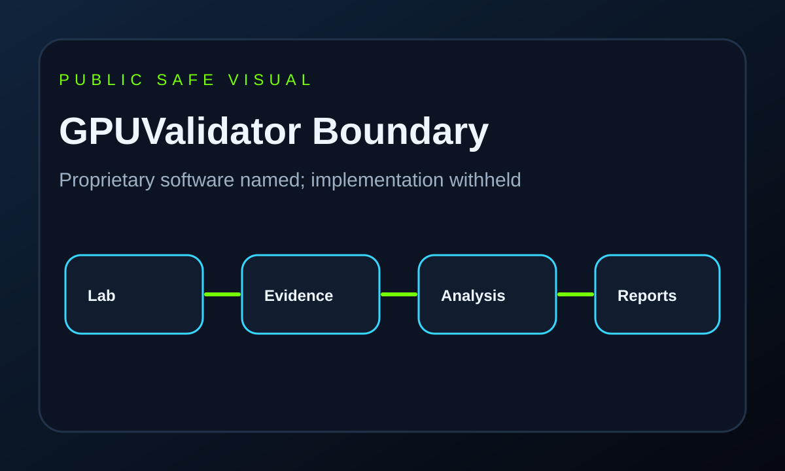

RunPod Environment
Authorized single-node, four-GPU A100 SXM class lab scope documented for public review.
Executive Release Candidate
A public-safe case study covering RunPod A100 SXM lab setup, Linux GPU validation, CUDA/NCCL methodology, evidence discipline, and executive-ready reporting.

About
AI infrastructure and enterprise engineering practitioner focused on Linux, HPC concepts, GPU validation, distributed systems, performance engineering, and customer-ready documentation.
Professional biography
Project Overview
Authorized single-node, four-GPU A100 SXM class lab scope documented for public review.
GPU model, count, driver, CUDA, and NCCL evidence linked to a sanitized fixture.
Public methodology is separated from proprietary GPUValidator implementation.
NCCL Tests command shape, iterations, message range, correctness, and evidence limits.
Evidence and Reports
Engineering artifacts are turned into executive summaries, infrastructure reports, GPU inventory narratives, customer validation reports, and management summaries.

Skills Demonstrated
Commercial Boundary
This repository documents methodology, validation thinking, benchmarking, and reporting. It does not disclose GPUValidator source code, APIs, schemas, auth/RBAC, agent protocols, deployment internals, or production screenshots.
GPUValidator overview
Documentation